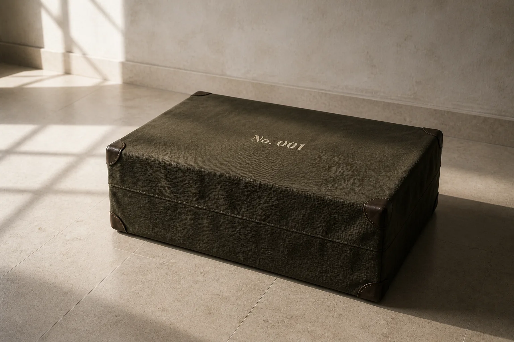
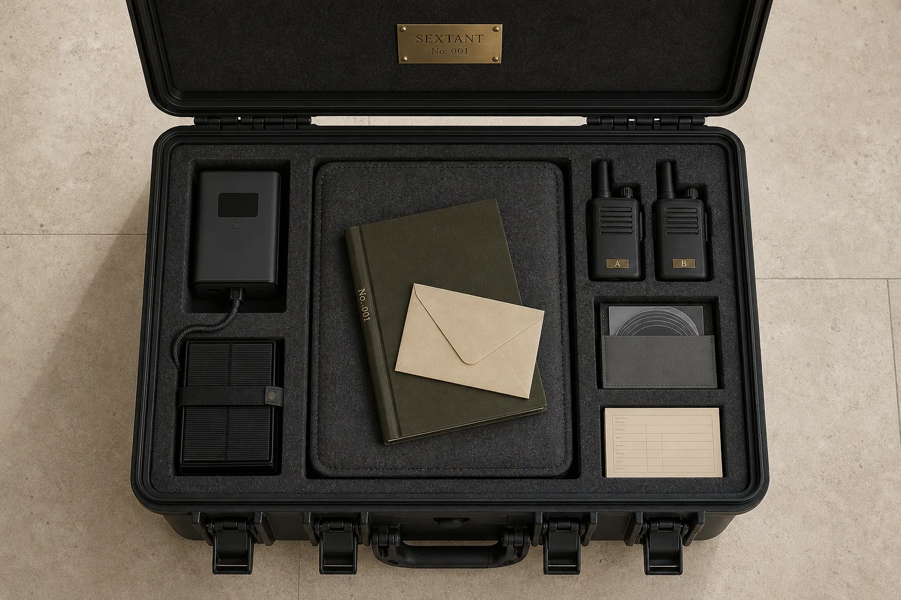
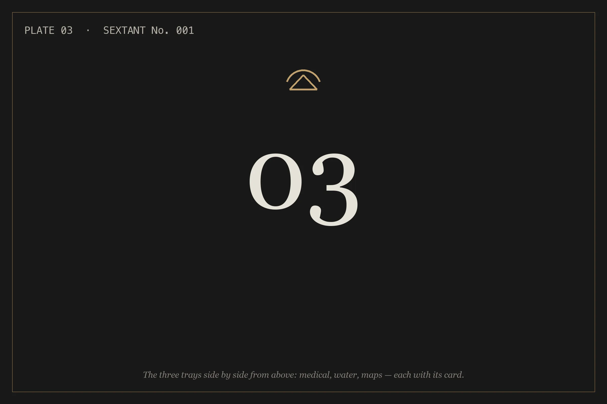
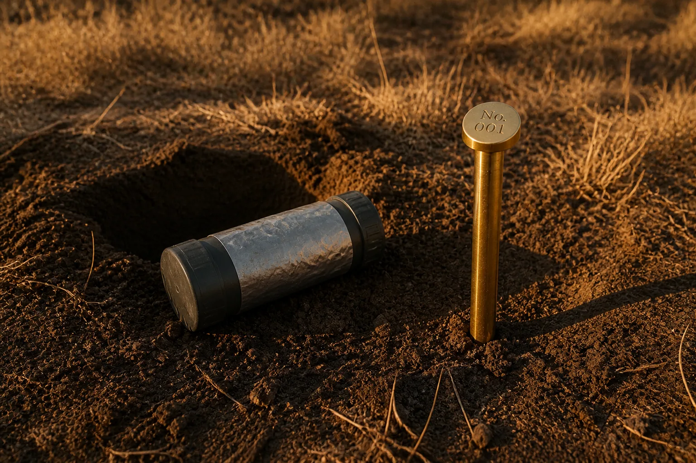
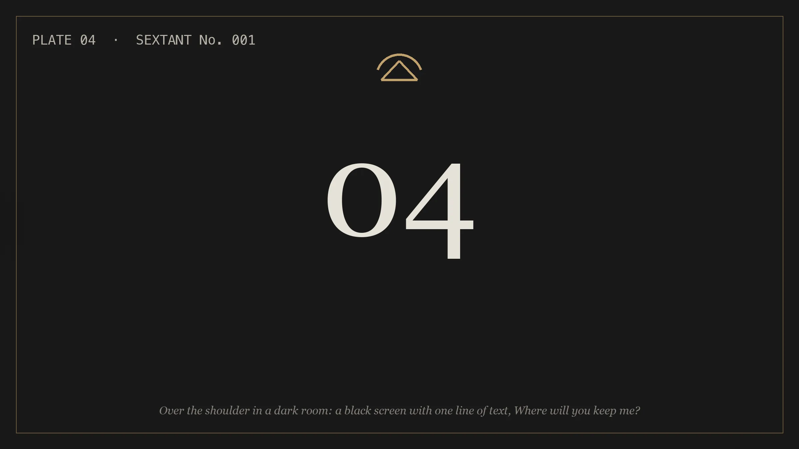
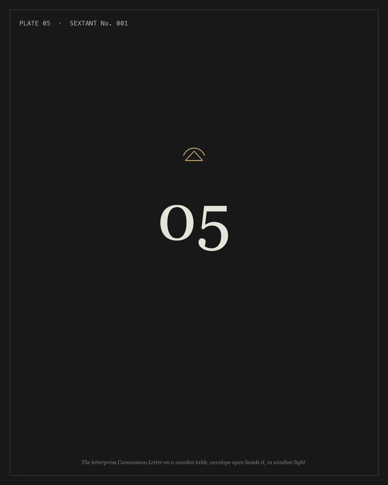

Sextant · Commissioned · Numbered · First edition of ten
Built for the day you can't look it up.
No signal. No account. No one to call. It still answers.

The idea
It is the one thing in the house that becomes more valuable the moment everything else stops working. Every piece inside it is there because the mind inside it can walk you through using it. It is built one at a time, numbered, and meant to be handed down.
It reads from a library, shows you the page, and tells you when it doesn't know. It needs sunlight, and nothing else.
The object · Sextant, first edition
What is in the case
$13,500
First edition, No. 001–010 · From No. 011, $15,000 · Plus tax where applicable
- Terminal
- A 14-inch Apple Silicon laptop, 1 TB, configured as an offline instrument. It wakes to a single prompt.
- Library
- 4 TB: two language models, one small for battery and one larger for reasoning, and a curated library of openly licensed and public-domain references — medical, repair, agricultural, navigational — with offline maps of your region.
- Cold copy
- The archive on archival optical media, in a sleeve, for the day the drive doesn't spin.
- Power
- A LiFePO4 power station and a 200 W folding solar panel. Direct DC to USB-C, cable pre-run. The station travels separately and is seated at the handover.
- Housing
- A Pelican case, foam cut to this configuration and lined in wool felt, with a Faraday fabric liner lab-certified to MIL-STD-188-125-2.
- Comms
- Two LoRa mesh radios, pre-paired and labeled A and B. Text the terminal from the far end of the property, with no tower.
- Trays
- Medical, water, and maps, each in its own tray. Below.
- Paper
- A bound logbook. A twelve-page field card. The numbered brass plate inside the lid.
- Weight
- About 40 lb, cased. Transportable, not pocketable.
- Service
- A thirty-minute handover. In Southern California, in person.
What isn't in it. No subscription, no account, no satellite link, no medicine, no second tier. Nothing in it renews, phones home, or needs a signal. The only dates in the case are on the medical supplies, and the annual refresh replaces them.

The trays · Proof, not accessories
Everything in the case knows how to be used
Three trays come in every Sextant. Each has a one-page card: what the Sextant knows about it, and the first thing to ask.
- MedicalIncludedTourniquet, hemostatic gauze, and a wound-closure kit. Bleeding control and wound care, read from the reference library with the page cited.
- WaterIncludedA titanium purifier with a spare cartridge. Source selection, treatment order, and what the purifier does and doesn't remove, per its manufacturer.
- MapsIncludedYour own land on three waterproof prints, and a tritium compass. Bearings, pacing, a route out.

Optional additions
- Blade and multitool$1,100Field repair, shelter, processing, sharpening and care.
- Aerial survey, Tier I$1,350Pre-flight, registration, survey patterns, reading the footage against the map. Under 250 g.
- Aerial survey, Tier II$7,500As above, with thermal imaging. Requires FAA registration and Remote ID.
- Cache capsule$650Siting, sealing, marking, retrieval.
- Private emplacement$3,500 + travelWe place it on your land, with you, and log it in the book.
- Annual refresh$450 a yearA new archive drive and fresh medical supplies. Offered every year, never required.

The ritual · How it arrives
The first thing you type is the last thing we designed
- A waxed-canvas cover with the number stenciled on it. Nothing else. Delivered by hand — in Southern California, by the maker.
- Under the lid, the logbook, and a sealed envelope: open this before anything else.
- One sentence inside. It is the first thing to type.
- The terminal wakes to a black screen and a single line. You type the sentence. It answers with what it is, what it holds, and one question: where will you keep me? Your answer is the first line of the logbook.
- The power station, which travels on its own, is seated in its well. Then the radios, the cold copy, the field card, and the three trays, each in its place.
- Under everything, a handwritten note from the maker. The only signed object in the case.

For the giver
You can't give someone certainty. You can give them the thing that comes closest: something that knows what to do, holds what they'll do it with, and has their number on it.
A commission placed now arrives in January or February. Within two days of your deposit, a letterpress Commission Letter goes out to you, numbered and dated by hand: A Sextant is being built for you. It is number ___. It arrives ___. That is what goes under the tree.
For the letter to be in your hands by December 24, commission by December 16.
In Southern California, the maker delivers it and stays for the first boot. We will tell you the sentence on the card, so you can be in the room when it's typed.

From the maker
I build AI systems for businesses, and nearly everything I build assumes the network will be there. Sextant is the one that doesn't. It reads from a library it carries, shows you the page, and says so when the page isn't there, because the moment you need it is the moment you can't check its work.
Each one is numbered, recorded in a ledger, and finished with a note in my hand.
Benjermin · Oceanside, California
Provenance · How a commission works
Fewer than fifty a year
- Edition
- Each unit is numbered on a brass plate inside the lid and recorded in a ledger we keep. The first edition is No. 001 to No. 010.
- The fitting
- A twenty-minute conversation, by video or, in Southern California, in person. We walk the spec sheet and confirm the map region, the engraving line, and any additions.
- Deposit
- Half, by card, wire or ACH, reserves your number. Fully refundable for 72 hours. After that, components are ordered.
- Build
- Four to six weeks. Your unit is photographed for its own logbook. If you have a date, tell us in the form.
- Balance
- Before shipment, by card, wire or ACH.
- Delivery
- Within the United States. In Southern California, by hand, by the maker. Elsewhere, insured ground. The power station travels separately, from its maker.
- Handover
- Thirty minutes, in person or by video, within a week of delivery. You write the first entry.
- Warranty
- Two years on our work: the build, the archive, the felt and foam, the plate. Each component keeps its own maker's warranty.
- Made by
- Benjermin, in Oceanside, California.
- Terms
- Terms of commission, including warranty, delivery and returns.
Before you ask
It's a laptop in a box.
The laptop is under a fifth of it. The rest is four to six weeks of building one properly, a library it reads from, power that runs on sunlight, the tools it teaches you to use, and the fact that there aren't many of them.
You've used AI. It makes things up.
It can. That's why it doesn't answer from memory. It reads from the library in the case and shows you the page. When it can't find one, it says so, and the page is still there to read yourself.
I have Starlink and a generator.
Then you have the two things that stop first. One needs a constellation and a billing account; the other needs fuel. This needs sunlight.
Who are you, and why should I believe you built it right?
Sextant is made by Benjermin, who builds AI systems for businesses, in Oceanside, California. Fewer than fifty a year, each numbered, photographed, and recorded in a ledger we keep. His name is on the note in the case.
Can I see one first?
In Southern California, yes: the fitting can be in person. Anywhere else, it's a video call, and your deposit stays fully refundable for 72 hours.
In eighteen months it's obsolete.
The model will be. The library won't: bleeding control, engine repair, and the map of your valley don't update on a product cycle. A refreshed archive is offered every year. It is never required.
This is for people who think the world is ending.
It's for people who've had a pipe burst on a closed road at two in the morning. Cosplay is gear you'll never use. This is the book your grandfather kept on the shelf, with hands to help you use it.
Thirteen thousand five hundred dollars.
Yes. It's built one at a time, it holds everything it knows how to use, and it's meant to outlast you.
Commission request
When the cloud goes dark, your intelligence doesn't.
Request a fitting
Your name, an email, and two questions. We reply within a day, from a person.
Received.
We reply within a day, from a person. If you'd rather write directly: commissions@madebysextant.com
That didn't send.
Please write to commissions@madebysextant.com and we'll reply within a day.